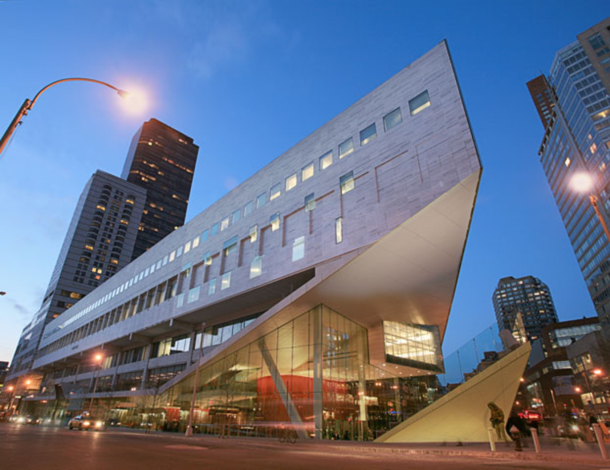
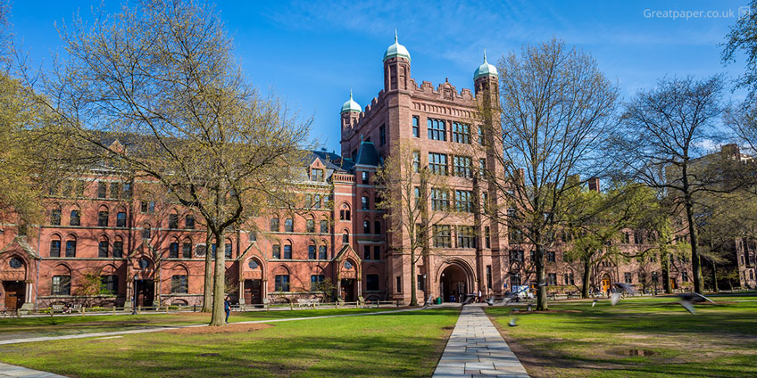

Mes choix d'orientation pour après le bac
Après avoir passé le bac, si je le peux je souhaiterai partir étudié aux Etats Unis, avec une bourse si possible, dans une université soit dans le domaine de la médecine, soit dans une écolé d'art dramatique ou du cinéma. Dans le domaine de la médecine ce qui m'intéressse le plus c'est la chirgurie, le nombre d'annnées d'études après le bac est de 12 à 15 ans. L'école d'art dramatique, elle, se fait en 3 à 5ans maximum. Les université et les écoles dramatiques sont très coûteuses, il faut donc obtenir des bourses pour avoir une chance d'être sélectionné car la plus part des écoles sont privés et pour les université, même si elles sont publiques elles restent coûteuses. Le niveau requiert est élevé et peu sont sélectionné.
Photo de grandes université aux USA, Julliard, Yale, Harvard.
 